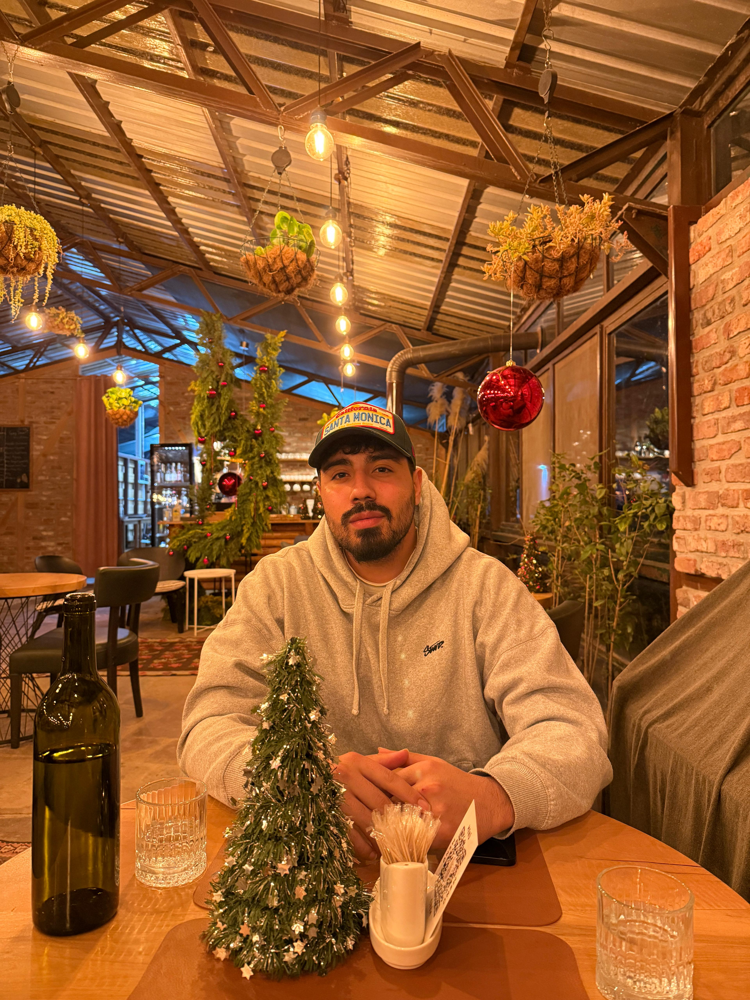

Modern web teknolojileri ve yazılım mimarileri üzerine çalışan, öğrenmeye ve üretmeye hevesli 3. sınıf öğrencisi.
Bana UlaşınYazılım dünyasına ve özellikle Frontend (React, Vite) ile Backend (Java) geliştirme süreçlerine ilgi duyan bir yazılım mühendisliği öğrencisiyim. Geliştirdiğim projelerle teknik becerilerimi artırmayı hedefliyor, 2026 yaz dönemi için kendimi geliştirebileceğim bir staj fırsatı arıyorum. Boş zamanlarımda video oyunları oynamaktan ve otomotiv dünyasını, özellikle de Audi A5 gibi modelleri incelemekten keyif alıyorum.
Bölüm: Yazılım Mühendisliği
Sınıf: 3. Sınıf
Açıklama: Bulut tabanlı ağ trafiğini izlemek için geliştirilen sistemde Log Toplama Pipeline'ının oluşturulması.
Kullanılan Teknolojiler: ELK Stack, Beats, Logstash
Açıklama: Veritabanı modelleme süreçleri kapsamında ER ve EER diyagramlarının tasarlanması ve ilişkisel tablolara dönüştürülmesi raporu.
Kullanılan Teknolojiler: Veritabanı Tasarım Araçları, SQL Temelleri
Benimle aşağıdaki kanallardan iletişime geçebilirsiniz: